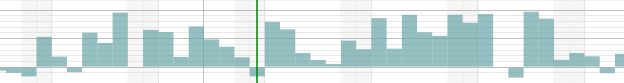
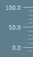

Klasse ChartLayout
java.lang.Object
com.flexganttfx.model.Layout
com.flexganttfx.model.layout.ChartLayout
Using the chart layout class results in activities being laid out as chart
bars. A series of such bars can for example be used to form a capacity
profile. Activities of type
ChartActivity will be placed on a
zeroline between getMinValue() and getMaxValue(). The
height of the activity will be based on the value returned by
ChartActivity.getChartValue(). Activities of type
HighLowChartActivity will appear as floating bars. The layout also
supports the definition of minor and major chart lines drawn in the row
background.

- Seit:
- 1.0
- Siehe auch:
-
Eigenschaftsübersicht
EigenschaftenTypEigenschaftBeschreibungfinal DoublePropertyReturns the property used to store the maximum value that will be used for the scale and the layout of the row.final DoublePropertyReturns the property used to store the minimum value that will be used for the scale and the layout of the row. -
Konstruktorübersicht
Konstruktoren -
Methodenübersicht
Modifizierer und TypMethodeBeschreibungfinal ObservableList<Double> Returns the major ticks to be displayed in the row background and by the row scale.final doubleReturns the value of themaxValueProperty().final ObservableList<Double> Returns the minor ticks to be displayed in the row background and by the row scale.final doubleReturns the value ofminValueProperty().booleanDetermines if the UI should be able to show a horizontal cursor line.final DoublePropertyReturns the property used to store the maximum value that will be used for the scale and the layout of the row.final DoublePropertyReturns the property used to store the minimum value that will be used for the scale and the layout of the row.final voidsetMaxValue(double value) Sets the value of themaxValueProperty().final voidsetMinValue(double value) Sets the value ofminValueProperty().toString()Von Klasse geerbte Methoden com.flexganttfx.model.Layout
getPadding, paddingProperty, setPadding
-
Eigenschaftsdetails
-
maxValue
Returns the property used to store the maximum value that will be used for the scale and the layout of the row.- Seit:
- 1.0
- Siehe auch:
-
minValue
Returns the property used to store the minimum value that will be used for the scale and the layout of the row.- Seit:
- 1.0
- Siehe auch:
-
-
Konstruktordetails
-
ChartLayout
public ChartLayout()Constructs a new chart layout with a range of 0 to 100.- Seit:
- 1.0
-
-
Methodendetails
-
maxValueProperty
Returns the property used to store the maximum value that will be used for the scale and the layout of the row.- Gibt zurück:
- the maximum value displayed by the row / line.
- Seit:
- 1.0
- Siehe auch:
-
getMaxValue
public final double getMaxValue()Returns the value of themaxValueProperty().- Gibt zurück:
- the maximum value
- Seit:
- 1.0
-
setMaxValue
public final void setMaxValue(double value) Sets the value of themaxValueProperty().- Parameter:
value- the new maximum value- Seit:
- 1.0
-
minValueProperty
Returns the property used to store the minimum value that will be used for the scale and the layout of the row.- Gibt zurück:
- the minimum value displayed by the row / line.
- Seit:
- 1.0
- Siehe auch:
-
getMinValue
public final double getMinValue()Returns the value ofminValueProperty().- Gibt zurück:
- the minimum value
- Seit:
- 1.0
-
setMinValue
public final void setMinValue(double value) Sets the value ofminValueProperty().- Parameter:
value- the new minimum value- Seit:
- 1.0
-
getMajorTicks
Returns the major ticks to be displayed in the row background and by the row scale.
- Gibt zurück:
- a list of major tick values
- Seit:
- 1.0
-
getMinorTicks
Returns the minor ticks to be displayed in the row background and by the row scale.- Gibt zurück:
- a list of minor tick values
- Seit:
- 1.0
-
isSupportingHorizontalCursorLine
public boolean isSupportingHorizontalCursorLine()Beschreibung aus Klasse kopiert:LayoutDetermines if the UI should be able to show a horizontal cursor line. Currently only theChartLayoutand theAgendaLayoutsupport this.- Angegeben von:
isSupportingHorizontalCursorLinein KlasseLayout- Gibt zurück:
- true if a horizontal cursor line makes sense
-
toString
-